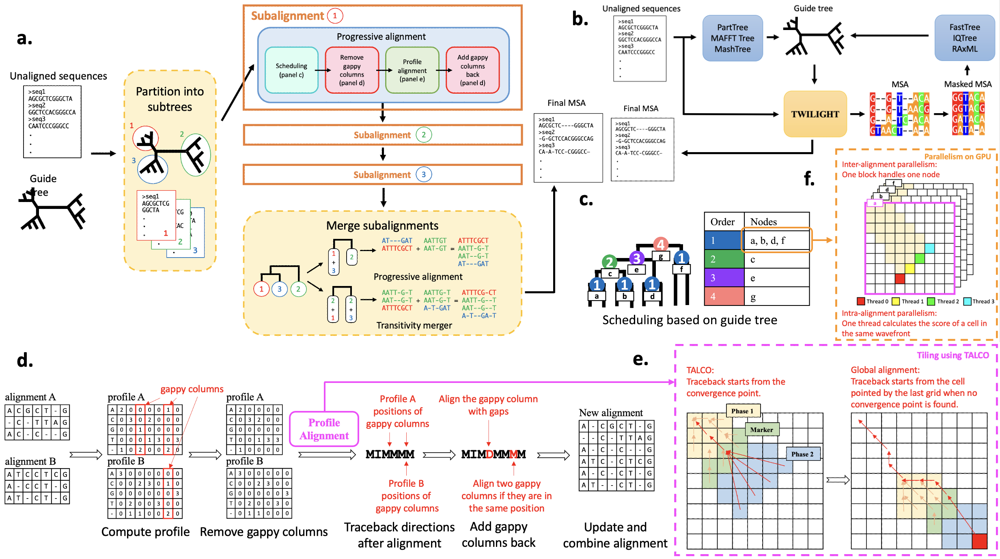

Welcome to TWILIGHT Wiki
Introduction
Overview
TWILIGHT (Tall and Wide Alignments at High Throughput) is an innovative MSA tool designed to leverage massive parallelism for efficient handling of tall and wide alignment tasks. It is able to scale to millions of long nucleotide sequences (>10000 bases). TWILIGHT can run on CPU-only platforms (Linux/Mac) or take advantage of CUDA-capable GPUs for further acceleration.
By default, TWILIGHT requires an unaligned sequence file in FASTA format and an input guide tree in Newick format to generate the output alignment in FASTA format (Fig. 1a, see TWILIGHT Default Mode for more details). When a guide tree is unavailable, users can utilize the iterative mode, which provides a Snakemake workflow to estimate guide trees using external tools (Fig. 1b, see TWILIGHT Iterative Mode for more details).
TWILIGHT adopts the progressive alignment algorithm (Fig. 1c) and employs tiling strategies to band alignments (Fig. 1e). Combined with a divide-and-conquer technique (Fig. 1a), a novel heuristic dealing with gappy columns (Fig. 1d) and support for GPU acceleration (Fig. 1f), TWILIGHT demonstrates exceptional speed and memory efficiency.

Key Features
Divide-and-Conquer Technique
TWILIGHT's divide-and-conquer technique (Fig. 1a) starts by dividing the initial guide tree into smaller subtrees with at most m leaves, which controls memory usage by limiting the number of sequences processed at once. TWILIGHT sequentially iterates over each subtree, loading its corresponding sequences into memory, and computing the subalignment for the subtree. After all subalignments are computed, TWILIGHT merges subalignments with transitivity merger algorithm of PASTA (Mirarab et al., 2015) or progressive alignment.
Progressive Alignment and Scheduling
TWILIGHT performs progressive alignment based on the guide tree structure, first aligning the most similar sequences or sequence groups and then progressively adding less similar sequences or groups. The scheduling algorithm (Fig. 1c) initializes the leaf nodes and then performs a post-order traversal to set the alignment order for internal nodes. This approach allows certain child nodes (e.g., a, b, d, f) to be aligned in parallel, while others (e.g., c, e, g) are processed sequentially, ensuring efficient parallel processing while respecting tree dependencies.
Removing gappy columns
As more sequences are added, the alignment tends to grow longer, often with many gap-dominated columns, leading to increased computational time. To improve efficiency, TWILIGHT excludes gappy columns (Fig. 1d)—where gaps exceed a specified threshold—before the alignment step, resulting in shorter profiles and reducing computational overhead. After the alignment step, TWILIGHT restores the excluded gappy columns. If gappy columns from both profiles align at the same position, they are merged, reducing the overall alignment length. Otherwise, a gappy column from one profile is aligned with a new gap introduced in the other profile.
Banded Alignment and Tiling Strategy
TWILIGHT employs a modified X-Drop algorithm to control memory usage in pairwise profile alignment, ensuring linear scaling with sequence length. However, storing traceback pointers in limited GPU shared memory still poses challenges. To address this, TWILIGHT integrates the TALCO tiling algorithm (Walia et al., 2024) (Fig. 1e), which limits traceback storage to a constant memory usage by using convergence pointers.
Parallelization Techniques
TWILIGHT employs parallelization techniques on both CPU and GPU to maximize efficiency. On CPUs, it is implemented in C++ with Threading Building Blocks (TBB) to exploit thread-level parallelism, processing independent alignments in parallel while also parallelizing profile calculations and sequence updates. On GPUs, TWILIGHT utilizes three levels of parallelism (Fig. 1f): multi-GPU parallelism distributes alignment tasks into batches and sends to multiple GPUs, inter-alignment parallelism assigns each GPU thread block to a pairwise profile alignment, and intra-alignment parallelism processes multiple cells in the dynamic programming matrix wavefront simultaneously.
Installation Methods
Using installation script (requires sudo access)
This has been tested only on Ubuntu. Users on other platforms or systems please refer to the next section to install TWILIGHT using Docker.
- Dependencies
- Git:
sudo apt install -y git - Conda (optional)
- Git:
- Clone the repository
- Install dependencies (requires sudo access)
Skip this step if the below libraries are already installed.
Otherwise, - Install TWILIGHT
If CUDA-capable GPUs are detected, the GPU version will be built; otherwise, the CPU version will be used. - Run TWILIGHT
- (optional) Install TWILIGHT iterative mode
- Create and activate a Conda environment (ensure Conda is installed first)
- Install Snakemake and tree inference tools
Note
TWILIGHT is built using CMake and depends upon libraries such as Boost, oneTBB, etc. If users face version issues, try using the docker methods detailed below.
Using Dockerfile
The Dockerfile installed all the dependencies and tools for TWILIGHT default/iterative mode.
- Dependencies
- Git:
sudo apt install -y git - Docker
- Git:
- Clone the repository
- Build the docker image
- CPU version
- GPU version (using nvidia/cuda as base image)
- CPU version
- Build and run docker container
- Run TWILIGHT
Run TWILIGHT
Default Mode
Functionalities
| Option | Description |
|---|---|
-t, --tree |
Input guide tree file path (Newick format). |
-i, --sequences |
Input unaligned sequences path (FASTA format). |
-f, --files |
Path to the directory containing all MSA files (FASTA format) to be merged. |
-o, --output |
Output MSA file path. |
-C, --cpu |
Number of CPU cores. Default: all available cores. |
-m, --max-subtree |
Maximum number of leaves in a subtree. Used when divide-and-conquer method is applied. |
-g, --max-group |
Maximum number of leaves in a group within a subtree. Groups are merged using transitivity merger. |
-d, --temp-dir |
Directory for storing temporary files. Used when -f or -m is specified. |
-r, --remove-gappy |
Threshold for removing gappy columns. Set to 1 to disable this feature. Default: 0.95. It is recommended to set a higher threshold (i.e. 0.999) or to 1 when the alignment is known to be less gappy. |
-w, --wildcard |
Treat unknown or ambiguous bases as wildcards and align them to usual letters. |
-v, --verbose |
Print out every detail process. |
-p, --pgsop |
Position-specific gap open penalty. y for enable and n for disable. Default: y |
-x, --matrix |
User-specified substitution matrix path. |
-k, --keep-temp |
Keep the temporary directory. |
-s, --sum-of-pairs-score |
Calculate the sum-of-pairs-score after alignment. |
--no-align-gappy |
Do not align gappy columns. This will create a longer MSA (larger file). |
--merge |
Method to merge subtrees. t for Transitivity Merger and p for Pregressive Alignment. Default: p. |
--match |
Match score. Default: 18. |
--mismatch |
Mismatch penalty (transversions). Default: -8. |
--transition |
Transition score. Default: 5. |
--gap-open |
Gap-open penalty. Default: -50. |
--gap-extend |
Gap-extend penalty. Default: -5. |
--gap-ends |
Penalty for gaps at both ends. Default: the same as gap-extend penalty. |
--xdrop |
X-drop value (scale). The actual X-drop will be multiplied by the gap-extend penalty. Default: 600. |
--output-type |
Way to present MSA. FASTA for FASTA format and CIGAR for CIGAR-like compressed format. Default: FASTA. |
-h, --help |
Print help messages. |
--version |
Show TWILIGHT version. |
| Options only for GPU version | |
-G, --gpu |
Number of GPU. Default: all available GPUs. |
--gpu-index |
Specify the GPU to be used, separated by commas. For example, 0,2,3 uses 3 GPUs with the index 0, 2 and 3. |
--cpu-only |
Run the program only using CPU. |
Note
All files used for the examples below can be found in the TWILIGHT/dataset.
Enter into the build directory (assuming $TWILIGHT_HOME directs to the TWILIGHT repository directory)
Default Configuration
Generate MSA by giving an unaligned sequence file and a guide tree file.
- Usage syntax
- Example
Divide-and-Conquer Method
Devide tree into subtrees with at most m leaves and align them sequentially to reduce the CPU’s main memory usage.
- Usage syntax
- Example
Merge Multiple MSA Files
Assume a star-tree structure to merge multiple MSAs. Please move all MSA files to be merged into one folder.
- Usage syntax
- Example
Iterative Mode
TWILIGHT iterative mode estimate guide trees using external tools.
Command Line Configurations
| Configuration (used with --config) |
Description and Options |
|---|---|
SEQ |
Input unaligned sequences path (FASTA format). |
OUT |
Output MSA file path. |
DIR |
Directory for storing temporary files. |
ITER |
Number of iterations. |
INITTREE |
Tree method for initial guide tree, options: parttree, maffttree or mashtree. |
ITERTREE |
Tree method for subsequent iterations, options: fasttree, iqtree or raxml. |
GETTREE |
Estimate tree after final alignment, options: yes or no. |
OUTTREE |
Output Tree file path, used when GETTREE=yes. |
| Snakemake Options | |
-n |
Dry run, check workflow. |
--cores |
Number of cores. If you would like to use more than 32 cores, please also modify num_threads in workflow/config.yaml. |
Note
Default options in workflow/config.yaml will be used if the configuration is not specified. You can also modify workflow/config.yaml to set your options.
Run TWILIGHT iterative mode
- Enter into
workflowdirectory - (optional) Update the
workflow/config.yamlfile
In addition to command line options,workflow/config.yamlprovides additional options for functionalities in TWILIGHT and substitution models for tree inference tools. Seeworkflow/config.yamlfor more details. - Run
- Usage syntax
- Example
Using default configurations
Specifying all command line options
Contributions
We welcome contributions from the community to enhance the capabilities of TWILIGHT. If you encounter any issues or have suggestions for improvement, please open an issue on TWILIGHT GitHub page. For general inquiries and support, reach out to our team.
Citing TWILIGHT
TBA.